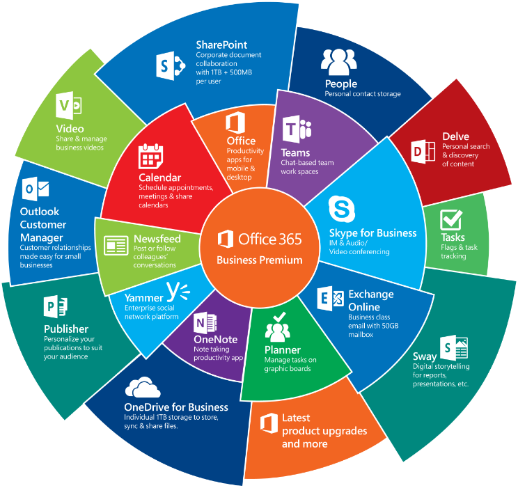

Before joining Microsoft, Nadella worked at Sun Microsystems, a company that sold computers, software, and information technology services. After quitting Sun Microsystems, Nadella joined Microsoft as a young engineer in 1992. In 2000, he secured his first executive role as vice president of Microsoft Central. Since then, there was no looking back for the Indian engineer. The following year, he got promoted as the Corporate Vice President of Microsoft Business Solutions. By 2007 Nadella was the senior Vice President of Microsoft Online Services, which not only put him in charge of Bing but the early versions of Microsoft Office and Xbox Live as well. In 2011 he was made president of the Server and Tools Division, which oversaw the Azure cloud platform and products for companies’ data centers like Windows Server and the SQL Server database. Back then, Server and Tools Division was earning about $16.6 billion in revenue. But under Nadella's leadership, within two years, the revenue multiplied to $20.3 billion. Satya Nadella took over the reins of Microsoft on February 4, 2014, as CEO after Steve Ballmer decided to step down. The decision to appoint Nadella was taken by Bill Gates, the founder of Microsoft and Ballmer. Nadella was successful in leading the firm out of its difficult times. Under Nadella, Microsoft has held its spot as a major tech competitor.
